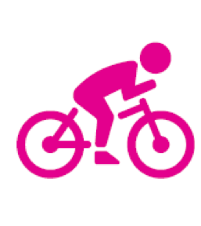

Look Wider The Look Wider octants are one of the main awards you can achieve in The Senior Section. There is no time limit on when the octants need to be completed by - so you can take it at your own pace! There are three phases, each with a time-spent boundary. Once you have completed an octant you will receive a certificate and badge. After you have completed Phase 1 and 2 of all eight octants you will receive The Chief Guide's Challenge - the second highest award in Guiding! Click the photo of the Octant for some ideas on how to complete it! 